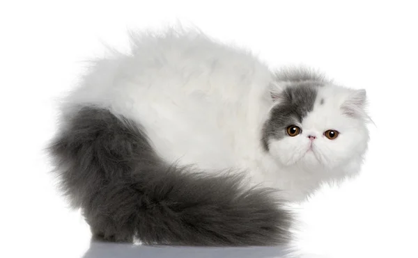

Le Persian :
Type de race
Une race connue grace à ses grands poiles, sont visage (peke-face), et d'être très gentil. Un chat venant de Persia(Iran)
Le Persian peut faire entre 35-45cm et entre 20 et 25cm d'hauteur et pesant entre 3-7kg.
Prix d'achat
Entre 500 et 2000 CHF